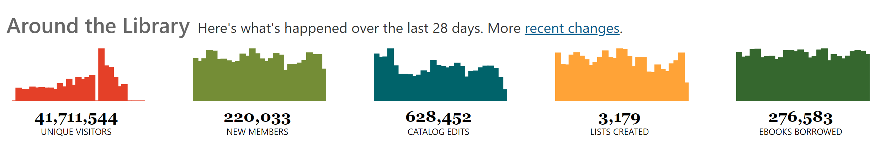

Openlibrary.org is a digital library project attached to the non-profit Internet Archive. Their goal is cataloging, and making available, every book ever published. Books are added via both digital collection donations and by digitizing physical book donations. The website itself is an open project, utilizing a wiki-style platform of open software, data, and documentation. Like Wikipedia, every listing can be edited by users, as well as being made from scratch. Besides user edits, they also have 7 branches of volunteers they recruit for specifically: librarians, communications team, software engineers, designers, accessibility specialists, translators, and beta participants. Besides volunteer work, there is some grant funding from the California State Library and the Kahle/Austin Foundation. They also receive money from affiliate links if users purchase books through their website links.
The Users for this system are meant to be readers and researchers from anywhere in the world. Users can make an account, allowing them to read books, check out books, make lists, edit listings, and more.
Currently the website can only be viewed in 14 languages, but one of their 7 branches of volunteers is translating the website into new languages. Volunteers can be anywhere in the world and uploaded collections can be in any language. They also have a branch of volunteers who work on making the website and the books accessible, including making books Digital Accessible Information SYstem (DAISY) compatible.
Openlibrary.org has over 20 million book records so far. Listings vary from sparse to well filled out. Listings include general book information as well as information like languages available, community reviews, lists it is included on, and identification numbers for a variety of online repositories. Books themselves will have 3 options for viewing: read, checkout to read, or preview. Previews will link to worldcat.org, allowing the reader to see locations to borrow the book, both locally and online.
Some of the unique features of the website include the Library Explorer browsing option. It allows users to visually browse book covers by subject on “library shelves”, like they are in a physical library.
The user profile also has some interesting features. Users can add to predetermined lists like “want to read” or make their own lists, like “reads for a summer holiday”. As you add books to your “read” list, it compiles statistics so you can explore your reading habits. There is a similar section to view your contributions to editing the website. If users make their profile public, other users can follow them and view their lists and book reviews.
The library also has a running display of statistics, that give an idea of just how much activity is happening on the site. Below is a snapshot from the website on Oct 2, 2025.

They should consider updating what the user profiles can display. Currently it is only your books lists, and as a global website, it would be interesting if users had the option to add a little bit of information about themselves. Especially since the site allows for following other users.
Another update that might be worth considering is their safety preferences. Currently the only option is to blur covers that have been flagged as having sensitive imagery. I think it would be worth having an option for users to select preferences for content that could be flagged in the same way they already do with imagery. Although I concede this would be a large undertaking to set that up.